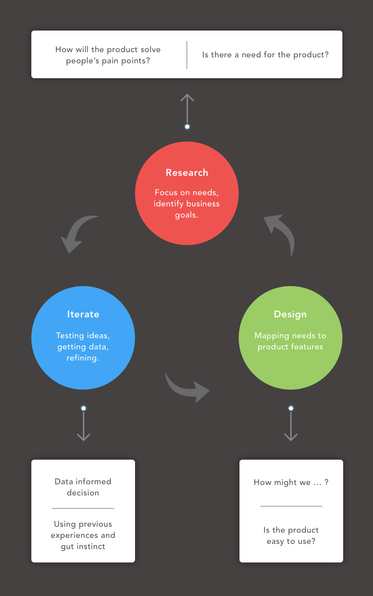

I am Mayank Sharma.
I am a UX designer, researcher, and learning enthusiast living in downtown Ann Arbor.
I have worked as Learning experience designer, User experience researcher and designer. My design methodology includes universal design with user centered approach.
Also, I am always learning something online. Currently, I am learning Human Computer Interaction at University of Michigan, Ann Arbor. At the same time, I am avidly involved in learning Data Visualization from Udacity.
I've worked with both startups and large corporations.
Learn more about my design process, my experience, or get in touch. I'm currently available for intern positions in UX Design/Research and Product Design.
Projects
Interactive Museum App
Incorporated various learning theories to engage kids like Constructivism, Behaviorism and Scaffolding. Our process involved defining learning goals, brainstorming, personas, storyboarding and wireframes.
Read the Story →Design Challenges for Autism
Designing interfaces for children in Tammana Autism Center.
Read the Story →
Customer Experience Design
Improved visitor experience at UMMA by contextual inquiry and affinity analysis. Recommended solutions to the client in the end related to navigation in museum.
Read the Story →Design Strategy at Chalopadho
Developed Content Strategy for the product to increase the engagement by 50% in teacher analytics.
Read the Story →My Design Process
Experience
As a UX designer at Chalopadho, I managed a small, happy team of designers, and led a major redesign of the core product — an online platform for delivering educational content and teacher analytics. To know more about how I worked there, click here .
Before Chalopadho, I spent an year working at Samsung Electronics where I was a software engineer in QA team.
Specialisation
I like working across a pretty broad range of things, but specialise in Learning Technologies and Accessiblity.
Contact Me
I like grabbing a coffee, and I'd love to hear from you. Email me any time here, or find me on twitter, on Medium, or LinkedIn.